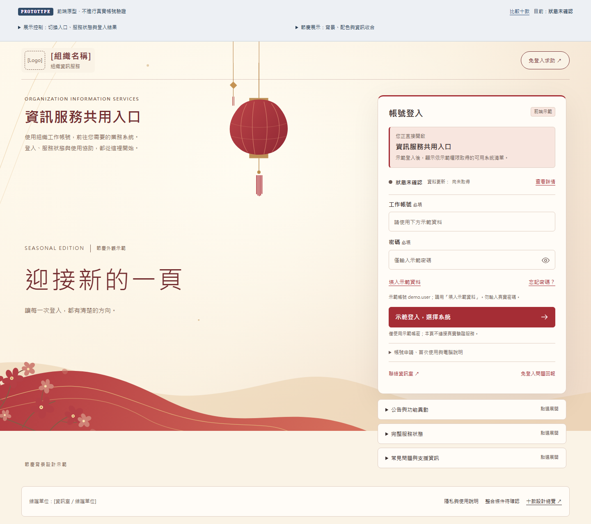
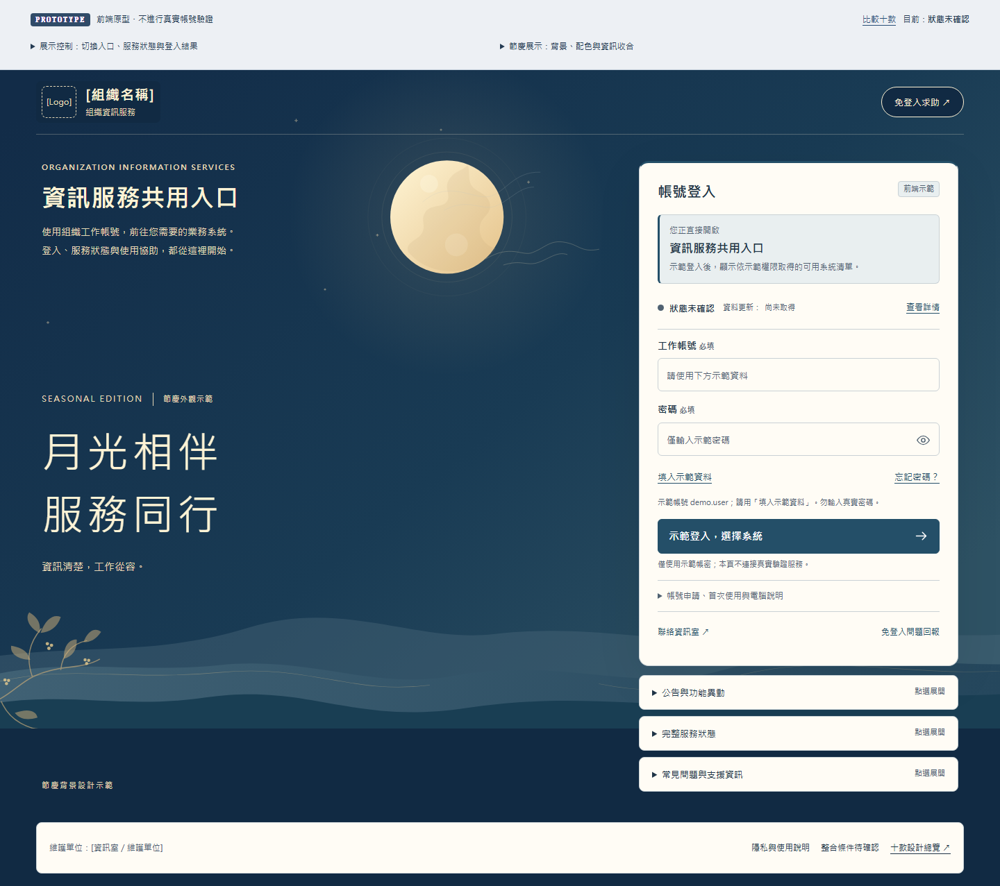

讓節日成為背景，
讓登入保持清楚。
背景、色票、啟用日期與資訊呈現分開設定。
同一套登入流程，可以保留原版配置，也能以背景為主，按需展開其他資訊。

收合有次序，操作有依據。
始終可見
組織與共用入口、目標系統、登入表單、狀態與更新時間、忘記密碼，以及免登入聯絡與問題回報。
點選後展開
一般公告、功能異動、完整服務資訊、FAQ、帳號申請、首次使用及共用電腦說明。支援鍵盤開啟與關閉。
異常優先
影響本次操作的維護或異常直接放在登入表單之前，說明現在可做什麼。節慶外觀不改變任何服務狀態。
在十款上試用同一套模組
原版仍保留十款的版面差異；背景主視覺使用共用精簡配置，讓節日換裝的維護集中於一處。登入欄位與展示情境持續沿用。
之後換節日，修改設定與素材即可。
主題管理桌機／手機圖片與色票；日期規則決定何時啟用；呈現模式決定哪些一般資訊先收合。內建圖片為本機 SVG，也可替換為本機 PNG、JPG 或 WebP。
自動排程預設停用，未設定任何真實節日日期。請每年確認起迄日；重疊規則依優先序，沒有適用規則回到日常外觀。圖片載入失敗時使用純色背景。
閱讀新增節日與排程維護說明 ↗